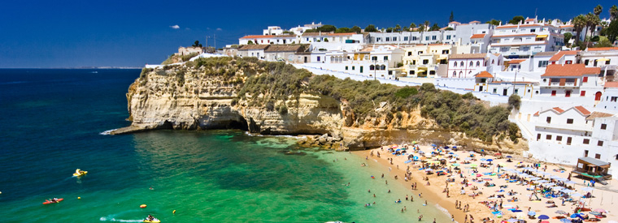
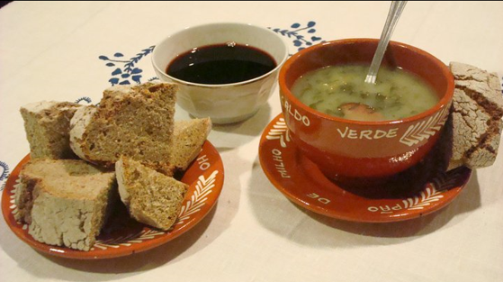
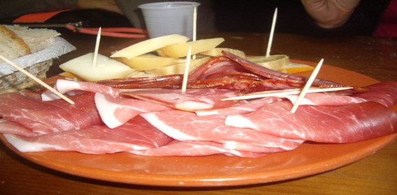
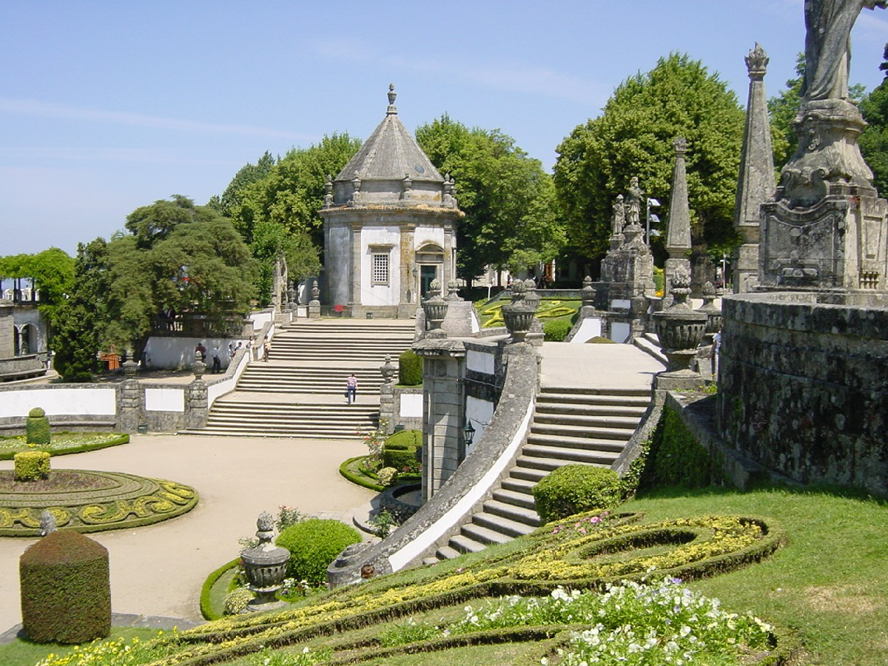
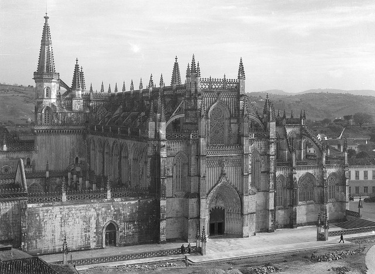

Quando pensa numas férias em Portugal só lhe surgem imagens de sol e mar?
Alguma vez pensou fazer um cruzeiro no Douro, com escalas em quintas centenárias para degustar soberbos vinhos do Porto?
Ou um passeio de barco por entre os belos canais da ria de Aveiro?
Ou até uma viagem aos Açores para observar as baleias no Atlântico?
Portugal continua a oferecer muitas surpresas por descobrir.
Porque não partir à aventura nos recantos menos explorados do país?
Portugal tem uma gastronomia tão rica e variada como a sua paisagem.
Tradicionalmente, em Portugal recorre-se muito ao peixe, principalmente, ao bacalhau, ao marisco, e às carnes, e em cada região, cada prato é preparado de maneira diferente.
Sopas
Para a categoria "entradas", a escolha recaiu na alheira de Mirandela (Trás-os-Montes e Alto Douro), pastel de bacalhau (Lisboa e Setúbal) e queijo da Serra da Estrela (Beira Interior/Beira Litoral).
As "sopas" escolhidas são açorda à alentejana (Alentejo), caldo verde (Entre Douro e Minho) e sopa da pedra (Ribatejo/Estremadura).

Carnes
Nas Carnes, o prato mais tradicional é a espetada de vaca em pau de loureiro, que lhe dá um sabor inconfundível.

Peixes
Já no "peixe", as opções são bacalhau à Gomes de Sá (Entre Douro e Minho), polvo assado no forno (Açores) ou a popular sardinha assada (Lisboa e Setúbal).
Uma visita ao Norte de Portugal é uma viagem no tempo que o transportará até aos primórdios da nação.
Esta região com antigas citânias celtas, castelos medievais e imponentes monumentos preserva um rico manancial de histórias e lendas.
Nas verdejantes encostas da região produzem-se alguns dos mais famosos vinhos do país, e não há vila que não possua a sua especialidade gastronómica.

Na cidade do Porto, esta combinação de encanto histórico e novas tendências cosmopolitas é verdadeiramente deslumbrante.O Centro é uma região de grandes contrastes. O interior é dominado pela Serra da Estrela, com os picos mais elevados do país, enquanto o litoral está repleto de bonitas cidades e vilas costeiras.
Coimbra é uma das mais antigas cidades universitárias da Europa e Fátima um dos maiores centros mundiais de peregrinação cristã.
Os passeios por esta região permitir-lhe-ão descobrir desde ancestrais vales glaciários a esplêndidas rotas vinícolas, verdejantes florestas e pinhais,
soberbas praias ou até provar o mais genuíno queijo da serra - um dos mais famosos de Portugal
Celebrada por pintores e poetas, a luminosidade única de Lisboa realça a beleza do estuário do Tejo e a imponência das suas praças e monumentos, mas também o carácter castiço dos seus antigos bairros e vielas.
O passado e o presente coexistem de forma harmoniosa nesta cidade que tem um ritmo muito próprio e cujo encanto deve ser apreciado com pormenor.
A poucos quilómetros, Cascais exibe o requinte de uma sofisticada estância costeira, e, um pouco para o interior, Sintra e a sua lendária serra irão encantar os apreciadores de cenários românticos.
As intermináveis planícies revestidas de campos de girassóis, sobreirais e olivais, o litoral repleto de praias imaculadas e as pequenas vilas adormecidas no tempo conferem ao Alentejo um fascínio muito especial.
As suas cidades encerram velhas memórias romanas e mouriscas, e as aldeias alcandoradas nas encostas junto ao mar oferecem soberbas panorâmicas sobre a foz de pequenos rios.
A deliciosa gastronomia alentejana atesta a inventividade do seu povo, e os inebriantes vinhos encarnam o carácter caloroso da região.
O clima soberbo, as inúmeras praias, as animadas estâncias balneares, os antigos monumentos e os campos de golfe uniram-se para fazer do Algarve a mais famosa região turística de Portugal.
Terra de extraordinária beleza natural, preserva zonas húmidas que servem de escala a milhares de aves migratórias, e, no interior montanhoso, entre as pitorescas cidades históricas
e tranquilas explorações agrícolas, a floração das amendoeiras oferece um momento de especial magia.
A Pérola do Atlântico deve grande parte da sua fama às esplêndidas paisagens revestidas de vegetação subtropical, ao maravilhoso clima e às águas tépidas e convidativas.
O encantamento do mar preenche o coração dos madeirenses e contagia os visitantes, que se deixam tomar pelas oportunidades de requintado prazer que oferecem as costas da ilha.
A hospitalidade que vai encontrar na Madeira irá sem dúvida deixar-lhe a nostalgia de um regresso!
Os Açores são uma região de paisagens selvagens e intocadas, onde a tranquilidade caracteriza um modo de vida dedicado à terra e ao mar. Uma viagem aos Açores é sempre uma aventura de descoberta.
Nestas ilhas espera por si uma terra de misteriosas crateras vulcânicas, lagos encantadores e fascinantes paisagens, e as suas águas límpidas atraem baleias, golfinhos e marinheiros de todos os cantos do mundo.
Portugal surge em sexto, logo a seguir à Grécia. De entre as maravilhas portuguesas, são destacados principalmente a beleza das paisagens naturais, fazendo referência às ilhas dos Açores e Madeira, às paisagens
serenas do Alentejo e à fantasia mágica que é Sintra. Uma referência às duas grandes cidades portuguesas também não podia faltar. Apesar de considerar que os centros históricos do Porto e Lisboa foram muito negligenciados,
a costa ribeirinha foi designada como uma das grandes atracções das duas cidades.
Top 10 países mais bonitos do Mundo: <ol>
O Mosteiro dos Jerónimos é o mais impressionante símbolo do poder e da riqueza de Portugal durante a era dos Descobrimentos. Foi construído para comemorar a viagem de Vasco da Gama e dar graças à Virgem Maria para o seu sucesso. O túmulo de Vasco da Gama foi colocado dentro da entrada, assim como o túmulo do poeta Luís de Camões, autor do épico Os Lusíadas, no qual ele glorifica os triunfos da Vasco Da Gama e seus compatriotas. Outras grandes figuras da história portuguesa também estão sepultadas aqui, como D. Manuel, o rei D. Sebastião e os poetas Fernando Pessoa e Alexandre Herculano. O mosteiro foi preenchido por monges da ordem de São Jerónimo, cujo trabalho espiritual era dar orientação aos marinheiros e rezar pela alma do rei. É um dos grandes triunfos do gótico Europeu (tendo sido classificado pela UNESCO como património da humanidade), com muito do projeto caracterizado por elaborados detalhes esculturais e motivos marítimos. Este estilo de arquitetura ficou conhecido como manuelino, um estilo de arte que serviu para glorificar as grandes descobertas da altura. Os claustros são magníficos, cada coluna diferentemente esculpida com monstros marinhos, corais e outros motivos evocativos do mar, da época de exploração do mundo no mar. O interior da Igreja é espaçoso, com pilares octogonais, ricamente decorados com relevos, e fora existe um jardim consistindo de sebes, cortadas em forma de vários brasões municipais de Portugal. No centro está uma grande fonte também decorada com brasões de armas, iluminada em ocasiões especiais.
O mosteiro dominicanos da Batalha foi construído para comemorar a vitória dos portugueses sobre os castelhanos na batalha de Aljubarrota em 1385. Era para ser o projeto de edifício principal da monarquia portuguesa nos seguintes dois séculos. Aqui o estilo gótico altamente original, evoluiu profundamente influenciado pela arte manuelina, como demonstrado pela sua obra-prima, o claustro real.
Construído em cumprimento de um voto, por D. João para comemorar a vitória sobre os castelhanos em Aljubarrota (15 de agosto de 1385), o mosteiro dominicano da Batalha é uma das grandes obras da arte gótica.
A maioria do complexo monumental data do reinado de D. João I, quando a Igreja, o claustro real, a casa do capítulo e a capela funerária foram construídos.
A entrada principal da Igreja é através do alpendre na fachada oeste. Em ambos os lados deste portal estão esculturas dos doze apóstolos.
No centro há uma estátua de Cristo, rodeado por evangelistas, decorados com esculturas bíblicas, reis e rainhas, profetas e anjos, segurando instrumentos musicais da idade média. Esta grande profusão de esculturas é concluída com a Virgem Maria.
O interior da Igreja remete-se para o período gótico. A nave e os corredores estão separados por grossos pilares coroados com motivos vegetais.
As janelas da capela-mor, decoradas com vitrais do século XVI, a adoração dos Magos e a ressurreição de Jesus Cristo, projetando uma luz difusa dá à Igreja uma sensação de grande espiritualidade.

O Mosteiro de Santa Maria de Alcobaça, ao norte de Lisboa, foi fundado no século XII pelo rei D. Afonso I. O seu tamanho, a pureza do seu estilo arquitetónico, a beleza dos materiais e o cuidado com que foi construído, faz deste mosteiro uma obra-prima da arte gótica. Os túmulos de D. Pedro e D. Inês de Castro estão entre as mais belas esculturas funerárias góticas. O próprio rei ordenou que fossem colocados um em frente do outro, para que quando chegasse o dia da Ressurreição ele estaria enfrentando a mulher que ele amava, que foi brutalmente assassinada. O túmulo de D. Pedro é decorado com delicadas esculturas, a recontar a história deste trágico caso de amor. O mosteiro também é um excelente exemplo de um grande estabelecimento com uma infraestrutura única de sistemas hidráulicos e edifícios funcionais. Merecidamente reconhecida, a cozinha do século XVIII adiciona o interesse do grupo de edifícios monásticos do período medieval (refeitório, dormitório, casa do capítulo, claustros, quarto, salão, dormitório, sala dos monges e refeitório). O Mosteiro de Santa Maria de Alcobaça é um local de Património Mundial da UNESCO. Logo que se entra nave da Igreja – a maior construída em Portugal na idade média – sente-se um sentimento de espiritualidade que é normalmente evocado no início da arquitetura gótica.
O mosteiro de São Martinho de Tibães foi fundado no século VI, mas de momento não sobra nada do que ele foi nessa altura. No século XI o mosteiro foi reconstruído e em 1567 tornou-se a casa mãe da ordem beneditina de Portugal e do Brasil. Os edifícios que vemos hoje foram construídos no século XVII e XVIII. O mosteiro foi vendido em leilão em 1864 e mais uma vez caiu em decadência e ruína, começando de novo o trabalho de restauração em 1986. Está localizado na ala noroeste da cidade de Braga, no lado esquerdo da antiga estrada para ponte de Lima. Ele beneficiou de uma construção recente. Este monumento é uma atração imperdível. Quatro claustros pertencem às instalações do convento. A Igreja do mosteiro é um magnífico marco barroco em Portugal. Apresenta um sistema hidráulico, uma floresta e um jardim barroco com fontes monumentais. É ainda hoje, um dos mais impressionantes edifícios religiosos em Portugal. A beleza da Igreja decorre da rica decoração em madeira dourada. Embora a Igreja tenha sido construída ao longo de várias gerações, a escultura de madeira em Dourados é de 1750-1760 e cobre quase todo o espaço sagrado visível na Igreja. Os claustros são unificados por uma série de azulejos retratando a vida e a lenda de São Bento.
O Mosteiro da Serra do Pilar é o marco arquitetónico de Gaia. A interessante Igreja e claustros são dispostos de acordo com um projeto circular único em Portugal. Parte da área foi classificada pela UNESCO como Património Mundial, em dezembro de 1996. O convento construído no século XVI pertenceu à ordem de Santo Agostinho. A Igreja caracteriza-se por uma forma circular, uma réplica da Igreja de Santa Maria Redonda, em Roma, e é coberta por uma abóbada hemisférica com varanda estreita. Demorou 72 anos a ser concluído devido a falta de financiamento e à turbulência política daqueles tempos. Em 1832, durante o cerco do Porto, o Convento rapidamente se transformou em um forte improvisado. No início do século XX, o mosteiro foi usado para o quartel militar e permanece sob a tutela do Regimento de artilharia. Dentro, a Igreja apresenta alguns altares impressionantes em folha de ouro com colunas salomónicas. Há, também, do século XVIII, esculturas em madeira policromadas dos Santos Eulalia, Apollonia e Agostinho. Na frente da Igreja, há uma vista maravilhosa da cidade do Porto e do Rio Douro.
Os castelos são atracções turísticas imperdíveis na Europa. Neles respiramos história, revivemos batalhas, conhecemos lugares espectaculares e libertamos nossa imaginação. São milhares de fortificações que foram erguidas na Idade Média e estão espalhadas por todo Velho Continente. Após muito trabalho e muitos castelos percorridos, elaboramos uma lista com os dez castelos mais bonitos de Portugal.
Castelos <ol>
Por estar na região onde nasceu o Reino de Portugal é um castelo de grande importância histórica e considerado um dos exemplos mais notáveis da arquitectura militar medieval. As importantes obras de restauração nos anos 40 devolveram a dignidade que sempre mereceu. Por estar envolto por um parque com árvores centenárias que coexiste harmoniosamente com as muralhas medievais, os quatro imponentes torreões parecem erguerem-se altaneiros do meio da floresta. No interior há uma extensa praça com um gramado muito bem cuidado. Não deixe de visitar a Quinta do Castelo que fica mesmo junto a muralha e apresenta muitas atracções, como uma ponte e uma gruta que remetem a Gaudí.
Castelo de Santa Maria da Feira, Porto, Portugal
Muitos cometem o pecado de vir a Portugal e não conhecer a simpática vila onde nasceu o Reino de Portugal. O castelo foi construído no século X pela Condessa Mumadona (e não por Dom Afonso Henriques como muitos acreditam) para proteger o mosteiro que era frequentemente atacado pelos Mouros. Após as merecidas obras de restauração, mostra-se imponente e com toda importância que teve outrora quando foi palco de façanhas históricas e heróicas. O Paço dos Duques de Bragança, que fica mesmo ao lado do castelo é simplesmente belo. O centro histórico de Guimarães está repleto de atracções interessantes, como as praças, capelas, conventos, igrejas e casa senhoriais. Imperdível! Castelo de Guimarães, Portugal
Envolto pela bela paisagem da Serra D´Aire e localizado numa região repleta de monumentos históricos, como o Castelo de Ourém, o Convento de Cristo em Tomar, o Santuário de Fátima e os Mosteiros de Alcobaça e da Batalha, este castelo apresenta uma arquitectura muito mais palaciana do que propriamente militar. Apresenta alguns elementos renascentistas, mas as evidências mais fortes são as góticas quatrocentistas que estão bem evidentes na fachada sul. Na fachada principal, o amplo portal acompanhado por duas imponentes torres encimadas por coruchéus piramidais de placas de cerâmicas verdes conferem um estilo único a esta fortaleza. Conta ainda com uma ampla varanda com janelas repletas de detalhes que complementam a boa vista que se tem da região. Sofreu danos consideráveis após o terremoto de 1755 e foi recuperado na década de 70 após ser inserido no selecto grupo dos “Monumentos Nacionais de Portugal”. Castelo de Porto de Mos, Portugal
Um dos mais importantes castelos de Portugal por ter sido a sede da Ordem dos Templários, os protetores da primeira capital do Reino de Portugal, Coimbra, e dos territórios reconquistados aos Árabes. Motivo pelo qual é uma das mais imponentes fortalezas militares de Portugal que seguia o conceito de “povoação-fortaleza”. Em meados do século XV, a Ordem dos Templários deu origem a Ordem de Cristo, cuja responsabilidade passou a ser a dinamização dos Descobrimentos à nível mundial. Dentro da fortaleza ainda poderá apreciar edificações espectaculares, como o Convento de Cristo acompanhado dos claustros em estilo gótico e a igreja repleta de detalhes impressionantes. Castelo de Tomar e Convento de Cristo, Portugal
A localização em uma pequena ilha no meio do rio Tejo e o acesso apenas por barco já torna especial a visita a este castelo. A tranquilidade, que nos permite ouvir o deslizar das águas, e a bela paisagem envolvente completam este inesquecível cenário cinematográfico. Apesar de ter vestígios do período medieval (século I a.C.), a sua reconstrução foi concluída apenas em 1171 pela Ordem dos Templários que, na época, era responsável pela defesa e pelo povoamento da região. Castelo de Almourol, Portugal
Talvez seja a vila medieval mais famosa de Portugal. Não sei se pela proximidade de Lisboa (90km) ou pelo perfil empreendedor do prefeito que há muito tempo organiza diversos eventos durante o ano, passando pelo Festival do chocolate em Fevereiro, pelo Programa Religioso na Semana Santa, pelo Mercado Medieval em Junho e pela Vila Natal em Dezembro. Ou talvez seja mesmo pelo conjunto da obra. A verdade é que a vila é pequena, charmosa e repleta de atracções gastronómicas, artesanais e líquidas, como a famosa Ginginha de Óbidos servida no copo de chocolate. A caminhada pela muralha é muito prazerosa, pois de um lado você tem uma bela vista e de outro um vista panorâmica da vila e dos belos jardins das casas. Castelo de Óbidos, Portugal
Impossível de falar do Castelo dos Mouros sem falar do Palácio da Pena. São dois destinos que ficam muito próximos, na verdade é só tropeçar em um que você cai no outro. Localizados na deliciosa Serra de Sintra são dois dos principais monumentos de Portugal e que dispensam apresentações. Apenas ressalto que o Palácio da Pena é um dos 10 mais bonitos da Europa! Aproveite e visite também a Quinta da Regaleira, um oásis dentro do oásis que é esta serra. Não esquecendo que o centro histórico de Sintra é Património da Humanidade, um título mais do que merecido.
Inserido no topo de uma das encostas da Serra de São Mamede, o castelo é uma pequena parte da vila que também está envolta por muralhas medievais. A vista é simplesmente magnífica e permite contemplar a amplitude da vasta planície do Alto Alentejo. As estreitas vielas de pedra com trânsito de veículos bastante condicionado e as pequenas casas bem conservadas proporcionam uma atmosfera medieval bastante aconchegante. Castelo de Marvão, Portugal
Um dos poucos castelos circulares do mundo é destino obrigatório para quem for visitar o Alentejo, pois fica a apenas 15km de Évora. Por estar localizado no topo do monte de São Pedro, proporciona uma vista de 360 graus sobre a planície Alentejana. As edificações interiores estão um pouco desgastadas pelo tempo, o que é uma pena, mas as muralhas elipsoidais e o extenso gramado estão em óptimas condições. Castelo de Arraiolos, Portugal
Localizado no topo do monte Monsaraz, o castelo também proporciona vistas espectaculares sobre a planície Alentejana. Mas este tem um detalhe especial: a proximidade com o grande lago do Alqueva, o maior lago artificial da Europa, o que colabora ainda mais para o frescor de nossos olhos. Reza a lenda que é uma das mais antigas vilas de Portugal, com indícios que remontam a épocas pré-históricas. As estreitas vielas de pedra, o trânsito de veículos bastante condicionado e as casas de paredes brancas repletas de flores compõem um cenário espectacular! As vistas que se tem de cada esquina desta tradicional e simpática vila são apaixonantes. Castelo de Monsaraz, Portugal
Para regressar ao topo do documento siga esta ligação.
Uma ligação para a zona dos países mais bonitos do mundo.
Uma ligação para a zona dos castelos.
Uma ligação para a zona dos mosteiros.